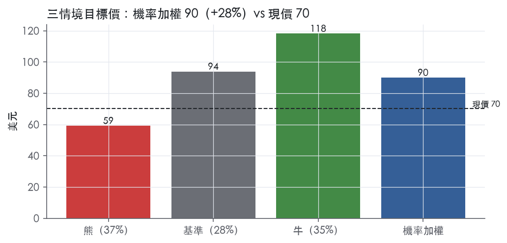
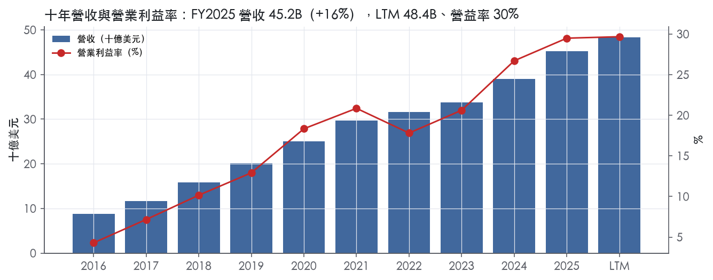
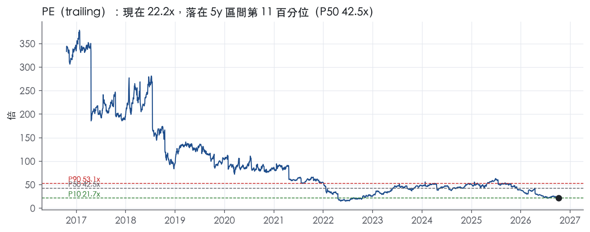
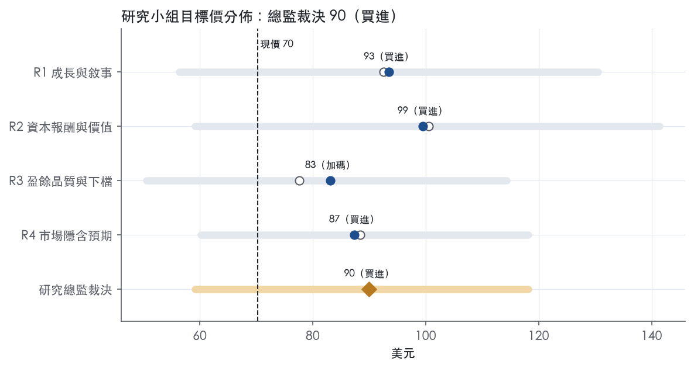
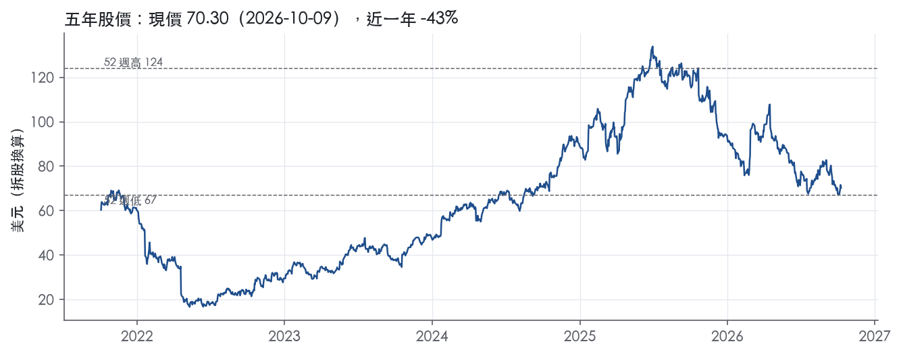

評等總表 › 通訊服務 › NFLX
盈餘照指引複利、倍數回P10，看多｜評等 買進｜目標價 90
| 報告日 | 評等 | 目標價 | 當時股價 | 超額報酬 |
|---|---|---|---|---|
| 2026-10-09 | 買進 | 89.99 | 70.30 | +20.0% |
| 評等 | 買進 |
| 12 個月目標價 | 90 美元 |
| 現價 | 70.30 美元（2026-10-09） |
| 預期報酬 | 股價 +28.0%＋股息 0.0%＝總報酬 +28.0%；同業籃門檻 8.0%，超額 +20.0% |
| 估值方法 | P/E 23.0x，套在第 5–8 季的EPS（也就是一年後的未來四季） |
| 三情境 | 熊 59／基準 94／牛 118 |
| 研究流程 | 四位研究員兩輪辯論＋研究總監裁決 |
| 資料來源 | SEC EDGAR XBRL、Tiingo、FRED（全免費） |
盈餘照指引複利、倍數回P10，看多（研究總監裁決，四位研究員兩輪辯論後）
評等 買進｜12 個月目標價 90 美元（總監三情境機率加權 90 與研究員中位數 90 各半）｜現價 70.30（2026-10-09）
預期報酬：股價 +28.0%＋股息 0.0%＝總報酬 +28.0%。同業籃門檻 8.0%，超額 +20.0%。
估值方法：P/E 23.0x，套在第 5–8 季的EPS（也就是一年後的未來四季）。三情境：熊 59（37%）／基準 94（28%）／牛 118（35%）。
什麼會讓研究總監改變看法：FY2027 指引營收成長落在個位數或營益率指引低於 32%，基準倍數降到市場持平以下並轉中性；公司動用 WBD 相關信貸或宣布新大型併購，熊情境成為主情境並轉偏空。
| 過去四季（實際，FY2026Q2） | 未來四季 | 第 5–8 季 | 第 9–12 季 | |
|---|---|---|---|---|
| 營收（B） | 48.4B | 53.9B | 59.3B | 64.1B |
| 營收成長 | 16.0% | 11.5% | 10.0% | 8.0% |
| 營業利益率 | 29.7% | 32.0% | 33.0% | 33.5% |
| EPS（美元） | 3.17 | 3.51 | 4.08 | 4.59 |
| EPS 成長 | 35.3% | 10.4% | 16.5% | 12.3% |
| 每股股息（美元） | — | 0.00 | 0.00 | 0.00 |
| P/E（現價） | 22.2x | 20.1x | 17.2x | 15.3x |
| 股息殖利率（現價） | — | — | — | — |
過去四季為申報數字；預測為研究總監的假設、程式計算。倍數與殖利率都用現價計算，用來看現價對應各期獲利的高低。
| 情境 | 機率（歷史） | 故事 | 未來四季營收成長 | 第 5–8 季營益率 | 倍數 | 目標價 | 股價漲跌 |
|---|---|---|---|---|---|---|---|
| 熊 | 37%（35%） | 風險表第2條（UCAN調價效應走完）引發第1條（固定內容成本致營益率重演FY2022下滑），第3條（動用信貸或新併購）壓縮倍數 | 9.0% | 28.5% | 18.0x | 59 | -15.8% |
| 基準 | 28%（29%） | 營收減速至約10%，營益率自31.5%指引每年約加一個百分點，市場把倍數付回P10 | 11.5% | 33.0% | 23.0x | 94 | 33.6% |
| 牛 | 35%（36%） | FY2027指引同時給雙位數成長與≥33%營益率、廣告超過約3B，倍數回到前瞻帶P25 | 12.5% | 34.5% | 27.0x | 118 | 68.1% |
目標價由程式依研究總監的驅動與倍數計算；機率由研究總監給定。括號內是歷史頻率：把這檔股票過去十年 12 個月報酬的波動形狀，置中在基準情境，結果落在各情境附近的比例。

四位研究員用不同方法各自估值，回應研究總監的質疑後交出第二輪，最後由總監逐點裁決。各研究員的主張見第七章，裁決理由見第八章，完整論證見《研究底稿》。
| 立場（一輪→二輪） | 加權目標價（一輪→二輪） | 評等（一輪→二輪） | 第二輪倍數 | 熊～牛目標價 | |
|---|---|---|---|---|---|
| R1 成長與敘事 | 看多→看多 | 92→93 | 買進→買進 | 23.0x | 56～131 |
| R2 資本報酬與價值 | 看多→看多 | 101→99 | 買進→買進 | 25.0x | 59～141 |
| R3 盈餘品質與下檔 | 中性→看多 | 78→83 | 中立→加碼 | 21.0x | 51～114 |
| R4 市場隱含預期 | 看多→看多 | 88→87 | 買進→買進 | 22.0x | 60～118 |
| 研究總監裁決 | 看多 | 90 | 買進 | 23.0x | 59～118 |
目標價由程式依各自的驅動與倍數計算；評等＝機率加權總報酬 − 同業籃門檻。
Netflix 是一家以訂閱制串流服務為核心的全球娛樂公司，提供電視劇、電影、遊戲與直播節目¹。會員可以隨時隨地播放、暫停、繼續觀看，並可隨時更改訂閱方案¹。公司的核心策略是在維持營業利益率目標的前提下，持續在全球擴大業務規模¹。賣給誰很單純——個人與家戶消費者，產品組合涵蓋含廣告訂閱方案到較高階的無廣告方案，目的是用不同定價滿足不同消費者需求¹。公司自稱仍處於滲透早期：截至 2025 年底，滲透率低於寬頻家戶這一潛在市場（TAM）的 45%，全球電視收視份額僅約 5%，但觸及的潛在觀眾規模已逼近 1,000,000,000 人²。換句話說，Netflix 賣的不是單一地區的有線電視替代品，而是一個仍在全球持續搶占線性電視收視份額的娛樂入口。FY2025 營收 45.18B 美元，年增 15.9%，規模已遠超過傳統媒體巨頭的單一串流業務線。
Netflix 只營運單一報導分部，營收主要來自向會員收取的月費訂閱¹。10-K 並未揭露依地區或方案拆分的營業利益貢獻，僅在合併財報附註中揭露地區營收，分部層級的利潤率拆分「10-K 未揭露」。產品線已從單純的影視串流，擴展到遊戲、直播節目、消費者產品與沉浸式體驗¹。廣告支持方案是近年最重要的新產品線：公司預計 2026 年廣告營收將較去年大致翻倍，達到約 3B 美元³。直播節目則是另一個策略性但非主力營收的板塊——公司預估 2026 年直播節目僅占內容支出略高於 5%，卻只貢獻約 1% 的觀看時數，但過去五年內，直播活動卻貢獻了新會員註冊單日高峰中的六個³。這說明直播節目的角色是會員獲取的流量入口，而非觀看時數或營收的主力。遊戲業務仍處於早期階段：雲端電視遊戲與兒童遊戲 App「Netflix Playground」自推出以來日活躍玩家成長 3 倍，兒童手機遊戲互動年增 600%，但公司自己定調「雖然基數小，這些早期訊號讓我們對建立具成長潛力的基礎更有信心」³。整體而言，Netflix 的產品矩陣是以訂閱串流為主幹，廣告與遊戲為成長期待最高的衛星業務，直播則是獲客工具。
Netflix 的通路以自有平台直接面對消費者為主，但高度依賴第三方設備與帳單夥伴¹。公司與多家有線、衛星與電信業者簽訂協議，讓自身服務可在這些業者的機頂盒上使用，部分合作夥伴同時也是競爭者或持有競爭串流服務的投資¹。這些通路協議期限通常為一到三年，一旦到期未能續約，會直接影響會員觸達¹。地區方面，公司 2026 年第二季在所有地區都實現雙位數營收成長，EMEA 單季營收突破 4.0B 美元，LATAM 與 APAC 各自突破 1.5B 美元³。UCAN（美國與加拿大）第二季營收成長 10%，公司解釋這僅反映近期一次調價的部分季效應，調價進展「符合預期」³。人力資源佈局也反映地區權重：截至 2025 年底全職員工約 16,000 人，其中美國與加拿大占 68%，歐洲、中東及非洲占 16%，亞太占 12%，拉丁美洲占 4%¹。付費方式上，公司接受信用卡、簽帳卡、禮物卡、預付卡、直接扣款、電子錢包及電信商代收等多元管道，部分市場仍仰賴有線電視等合作夥伴代為收費¹。整體看，Netflix 的客群已是全球性的，但 UCAN 仍是定價槓桿最明確、EMEA/LATAM/APAC 是成長權重更高的區塊。
FY2025Q3 營收 11.51B 美元，年增 17.2%，營業利益率 28.2%。FY2025Q4 營收 12.05B 美元，年增 17.6%，但營業利益率季節性下滑至 24.5%。FY2026Q1 營收 12.25B 美元，年增 16.2%，營業利益年增 18%，優於公司自身guidance，主要因訂閱營收略高於預期²；當季稀釋 EPS 達 1.23 美元，較去年同期 0.66 美元大增 86%，驅動因素除了營業利益走高，還包括認列與華納兄弟探索（WBD）交易相關的 2.8B 美元終止費，該筆款項計入「利息及其他收入」²。FY2026Q2 營收 12.56B 美元，年增 13%（FX 中性 12%），營業利益率 33.4%，較去年同期 34.1% 略降，公司解釋是因為上半年內容攤銷成長較快，預期下半年攤銷成長會放緩³。當季 UCAN 營收年增 10%，EMEA、LATAM、APAC 單季營收分別突破 4.0B、1.5B、1.5B 美元³。展望 FY2026Q3，公司預測營收成長 12%（FX 中性 11%），營業利益率約 33.2%，相較去年同期 28.2% 明顯改善³。全年指引方面，公司將 2026 年營收預測區間收窄至 51.0–51.4B 美元，維持營業利益率 31.5% 的目標（相較 FY2025 的 29.5%），隱含全年營業利益成長 20% 以上³。LTM（至 FY2026Q2）營收已達 48.37B 美元、EBITDA 14.73B 美元、自由現金流 11.15B 美元，顯示公司在營收持續雙位數成長的同時，利潤率曲線呈現逐季改善但有季節性波動的型態。
公司將自身成長引擎歸納為三大聚焦領域：提供更多娛樂價值（delivering more entertainment value）、運用技術提升服務體驗（leveraging technology to improve every aspect of our service）、以及改善營利化（improving monetization）³。在「娛樂價值」上，公司強調不只是觀看時數的「量」，更在意「質」與「多元性」——2026 上半年會員觀看時數超過 970 億小時，年增 2%，略快於 2025 年的 1.5% 成長，儘管冬季奧運與世界盃帶來競爭性排擠³；非英語內容貢獻超過三分之一的觀看量³。在「技術」上，公司提到正運用大型語言模型改善選片發現與會員偏好理解，並升級語音搜尋與自然語言搜尋功能，同時持續擴大生成式 AI 在內容製作生命週期中的應用³。在「營利化」上，公司明確表示近期調價表現「與過去調價一致、符合預期」，廣告業務預計 2026 年營收規模翻倍至約 3B 美元³。公司也強調自身仍處於滲透早期，當前滲透率低於寬頻家戶 TAM 的 45%、全球電視收視份額僅約 5%，將此作為長期成長跑道的論據²。
Netflix 的敘事邏輯清晰：用核心劇集/電影維持會員黏著，用直播與創作者內容做獲客尖兵，用廣告與調價做營利化槓桿，三者疊加支撐 2026 年營業利益率由 29.5% 升至 31.5% 的目標。風險在於內容攤銷的季節性（上半年攤銷成長快於下半年）會持續造成單季利潤率波動，投資人不宜用單季利潤率外推全年。放棄 WBD 併購後，公司選擇用自建內容生態（遊戲、播客、直播、創作者合作）取代外延式整合，這條路徑的資本效率優於併購，但也意味著成長引擎更依賴內容庫與產品創新的持續執行力。

Netflix 評為窄護城河：我們有把握未來 5 年以上 ROIC 仍高於資本成本，但對 10 年以上沒有把握。優勢來自兩處：全球規模攤提固定內容成本，以及自製內容累積的品牌與版權資產。消費端幾乎沒有轉換成本，這是無法給寬評級的關鍵原因。ROIC 由十年最低 14.2% 升至最新 36.7%，規模效益仍在擴大，因此趨勢判為變寬。
主要來源是成本優勢，也就是用規模攤提固定的內容成本。公司自承內容成本在本質上大致固定⁴。營收由 FY2016 的 8.83B 美元成長至 FY2025 的 45.18B 美元。同一份內容攤提在更大的會員基礎上，規模較小的後進者要買同等級內容，單位成本必然較高。
第二個來源是無形資產，包括品牌與自製內容版權。公司認為原創與獨家節目有助於區隔服務、強化品牌，並吸引與留住會員⁴。公司的智慧財產權涵蓋技術、營運流程，以及自製並透過服務發行的內容¹。許多會員是回流重新加入，或是經由既有會員的口碑推薦而來⁴。自製內容的版權屬於公司，不會像授權內容那樣被片商短期撤回，這是對抗片商自建串流的實質防線。
轉換成本、網路效應、效率規模三類找不到證據，不列入。會員可以隨時更改方案¹。會員取消的原因包括覺得用得不夠多、需要削減家庭開支，以及偏好競爭服務⁴。消費者也可能同時維持多個娛樂來源¹。
ROIC 的數字支持主張：有資料的 9 年中，9 年都高於資本成本代理值 10.2%，十年平均 22.2%，最低的 14.2% 也在資本成本之上。
利潤率的標準差不算小，毛利率為 5.6%、營業利益率為 7.8%，但這些波動來自逐年上升，而不是上下震盪。毛利率最低 29.1%、最高 48.5%，兩個端點分別落在 FY2016 與 FY2025。
真正的衝突在現金流：FCF 利潤率十年平均只有 0.3%，最低 -18.1%，標準差 15.6%。FY2016 至 FY2019 自由現金流連年為負，其中 FY2019 為 -3.14B 美元。會計 ROIC 把內容支出資本化後分年攤銷，在內容投資高峰期會高估當期的現金報酬。能以現金驗證的高回報只有 FY2023 至 FY2025 三年，自由現金流分別為 6.93B、6.92B、9.46B 美元。因此我們維持窄評級而不升為寬：ROIC 高於資本成本的紀錄成立，但現金報酬的紀錄太短，撐不起 10 年期的把握。
最大的威脅是內容供給端反過來成為競爭者。片商發展自有串流服務後，可能不再授權熱門影集或電影，部分授權條款也允許片商在相對短時間內撤下內容⁴。競爭加劇已經推高部分節目的成本⁴。
第二是資源雄厚的對手與替代品。部分競爭者擁有長期營運歷史、龐大客群、強大品牌、獨家內容權利與龐大片庫，且可能採取更積極的定價⁴。盜版以幾乎所有內容免費為訴求，公司自認這種競爭很難應對⁴。
第三是監管。部分國家把文化支持立法延伸到串流服務，內容包括投資義務、徵費與片庫配額¹。這會直接侵蝕規模優勢中的成本端。
第四是通路。設備與通路夥伴的協議期限通常為一到三年；若夥伴透過多服務探索介面（包括生成式 AI 驅動的介面）更能把消費者連結到內容，公司服務可能受到不利影響⁴。入口一旦被聚合平台拿走，品牌優勢就會被稀釋。
最後，固定成本結構是雙面刃。若成長不如預期，公司可能無法相應調整支出或提高營收，利潤率將受影響⁴。
目標倍數應相對傳統媒體與串流同業給予溢價，理由是 ROIC 長期高於資本成本，且規模攤提效益仍在擴大。但窄護城河代表超額報酬的高確信期只有 5 到 10 年，不宜以 5 年中位數 P/E 42.5x作為倍數回歸的目標。DCF 中建議把超額報酬期設在 5 到 10 年之間，之後讓 ROIC 向資本成本收斂。
| 指標 | 最新 | 十年平均 | 標準差 | 最低 | 最高 |
|---|---|---|---|---|---|
| ROIC | 36.7% | 22.2% | 7.0% | 14.2% | 36.7% |
| 毛利率 | 48.5% | 39.2% | 5.6% | 29.1% | 48.5% |
| 營業利益率 | 29.5% | 16.8% | 7.8% | 4.3% | 29.5% |
| FCF 利潤率 | 20.9% | 0.3% | 15.6% | -18.1% | 20.9% |
| ROE | 42.8% | 30.4% | 7.4% | 17.9% | 42.8% |
程式計算。資本成本代理值（10 年債＋5%）：10.2%；ROIC 平均減資本成本：12.0%；ROIC 有資料的 9 年中，高於資本成本 9 年。
LTM 營業現金流／淨利為 0.88x、自由現金流／淨利為 0.82x，兩者皆落在黃燈區，顯示過去四季淨利成長快於現金流入。拉長到近三年平均，CFO／NI 回升到 1.04x、FCF／NI 回升到 0.98x，已經是綠燈水準，說明短期缺口不是結構性問題。真正拖累 LTM 比率的是單一季：FY2026Q1 淨利 5,283M 美元幾乎等於同季營業現金流 5,290M 美元，轉換率接近 1x³；但 FY2026Q2 淨利 3,401M 美元、營業現金流只有 1,744M 美元，轉換率明顯偏低³，這一季的落差把 LTM 平均拉下來。十年平均 CFO／NI 為 -1.03x、FCF／NI 為 -1.20x 更誇張地呈現負值，但這是舊時代的痕跡：FY2016–FY2019 Netflix 仍在內容庫擴張早期，CFO 連年為負（如 FY2016 CFO -1.47B、FY2017 -1.79B、FY2018 -2.68B、FY2019 -2.89B），而淨利仍為正，兩者方向相反導致十年平均失真，對當下盈餘品質沒有參考意義。應計比率 LTM 2.8%、三年均 0.1%，皆遠低於 5% 紅線，也佐證目前的現金落差是時序性而非系統性虛增盈餘。
本次財報新聞稿節錄沒有揭露任何非 GAAP 調整項目（例如 adjusted EBITDA、adjusted EPS 的加回表），公司呈現的就是 GAAP 營收、營業利益、淨利、每股盈餘與現金流量表³。唯一值得注意的「口徑差」出現在 FY2026Q1：營業利益 3,957M 美元，但淨利卻達 5,283M 美元，中間約 1,326M 美元的落差並非來自營運本業，而是非營業項目³；新聞稿本身沒有拆解這筆金額的來源，但以 Netflix 慣常的財報結構判斷，最可能是歐元計價債務的匯兌重評估未實現收益（非現金項目），這也正好解釋了同季現金流與淨利高度一致、但下一季（Q2）現金流大幅落後淨利的現象——如果 Q1 的淨利含有非現金匯兌收益，LTM 淨利基礎就會比現金流虛高一截。內容攤銷方面，公司在信中明確說「content amortization growth is higher in the first half of the year…we continue to expect content amortization to grow slower in the second half of the year and to increase ~10% for 2026」³，這是 GAAP 費用本身的時序變化，不是非 GAAP 加回項，我認為這部分攤銷是真實成本，不該被打折看待，因為內容投資本質上就是 Netflix 的營運資本支出。整體而言，沒有 SBC 大幅加回、沒有重組費用排除、沒有「調整後」盈餘膨脹報表的跡象，GAAP 數字本身相對乾淨。
淨負債／EBITDA LTM 0.35x、三年均 0.66x，遠低於 1.50x 綠燈門檻，槓桿非常保守。利息保障倍數 LTM 16.9x、三年均 13.9x，付息能力極強。對照年度資料，FY2025 淨負債 5.40B 美元，相對 FY2025 EBITDA 13.66B 美元，槓桿水準與量化底稿結論一致。資本配置上，稀釋股數年變動為 -0.9%（LTM）、-1.3%（三年均），顯示公司持續淨減少股數，回購力度大於股權酬勞稀釋；對照年度數據，FY2025 稀釋股數 4.34B 股，較 FY2024 的 4.39B 股下降。股利＋回購／淨利 LTM 72.7%、三年均 88.9%，都是綠燈且低於 100%，代表股東回饋主要靠自有盈餘支撐，不是舉債買庫藏股。SBC／營收 LTM 僅 1.0%、十年均 1.5%，在串流／科技同業中偏低，不構成盈餘灌水的因素。
計分表沒有任何紅燈，三個黃燈逐一回應如下。第一，CFO／NI（LTM 0.88x，黃燈）：主因是 FY2026Q2 單季現金轉換偏弱（淨利 3,401M 美元對現金流 1,744M 美元）³，而三年平均已回到 1.04x 綠燈水準，判定為短期時序性落差、非結構性問題，不需要對 LTM 盈餘打太重的折扣，但估值端可用三年平均而非 LTM 單季數字。第二，FCF／NI（LTM 0.82x，黃燈）：同一組成因子，扣掉資本支出後比率略低於 CFO／NI，但三年均 0.98x 接近 1x，加上公司資本支出／營收比率長期穩定在 1%～2%（量化底稿年度表），不是資本支出暴增吃掉現金的問題，判定為假警報。第三，應計比率（LTM 2.8%，黃燈；十年均 7.3%）：LTM 2.8% 遠低於 5% 紅線，十年均 7.3% 高於紅線但代表的是 FY2016–FY2019 內容資產快速累積期的歷史特徵，與現在的商業模式（內容庫已成熟、攤銷與現金支出逐漸收斂）不可比，判定為口徑／階段造成的假警報，不是當下盈餘品質的真問題。其餘五項（SBC、淨負債／EBITDA、利息保障、稀釋股數變動、股利＋回購／淨利）均為綠燈，沒有需要回應的紅旗。
GAAP 淨利基本可信，唯一要扣的是 FY2026Q1 那筆約 1,326M 美元、疑似非現金匯兌收益的非營業項目，估值時應以「排除該筆後的正常化淨利」或直接用三年平均的現金流轉換率去推算核心盈餘，而不是直接套用 LTM GAAP EPS 3.17。槓桿極低（淨負債／EBITDA 0.35x）、利息保障極強（16.9x），不構成壓抑估值倍數的理由，目前 trailing P/E 22.2x、EV/EBITDA 20.2x 已遠低於五年與十年中位數（band 資料），盈餘品質本身不是壓低倍數的核心因素，倍數偏低更多反映成長預期而非財務體質疑慮。整體建議：盈餘小幅打折（反映 Q1 非營業性收益與季度現金轉換波動），但不需要像低品質個案那樣大幅折價，現金流與資產負債表的底盤仍然穩健。
| 項目 | LTM | 近三年 | 十年 | 燈號 | 規則 |
|---|---|---|---|---|---|
| 營業現金流／淨利 | 0.88x | 1.04x | -1.03x | 黃 | ≥1.00x 綠、<0.80x 紅 |
| 自由現金流／淨利 | 0.82x | 0.98x | -1.20x | 黃 | ≥0.90x 綠、<0.60x 紅 |
| 應計比率（(淨利−CFO)／平均總資產） | 2.8% | 0.1% | 7.3% | 黃 | ≤0.0% 綠、>5.0% 紅 |
| SBC／營收 | 1.0% | 0.8% | 1.5% | 綠 | ≤3.0% 綠、>8.0% 紅 |
| 淨負債／EBITDA | 0.35x | 0.66x | 2.24x | 綠 | ≤1.50x 綠、>3.00x 紅 |
| 利息保障倍數（營業利益／利息） | 16.9x | 13.9x | 7.77x | 綠 | ≥8.00x 綠、<3.00x 紅 |
| 稀釋股數年變動 | -0.9% | -1.3% | -0.1% | 綠 | ≤0.0% 綠、>3.0% 紅 |
| （股利＋回購）／淨利 | 72.7% | 88.9% | 69.6% | 綠 | ≥50.0% 綠、<0.0% 紅 |
程式計算；燈號以 LTM（無則近三年平均）判定。
| 風險 | 觸發指標（看什麼數字、在哪裡看） | 對 EPS 的影響方向與粗略幅度 | 未來 12 個月發生機率（高／中／低） | 出處 |
|---|---|---|---|---|
| 內容成本固定、攤銷剛性，營收一旦不如預期則利潤率受壓 | 每季 10-Q/8-K 揭露的營業利益率，對比公司guidance（FY2026 目標 31.5%，FY2025 為 29.5%）；content amortization 年增率（guidance：FY2026 約 +10%） | 負向、中～大：FY2026Q1/Q2 攤銷成長快於下半年已使 Q2 營益率年減（33.4% vs 34.1%）³ | 中 | ⁴「長期且largely fixed cost 的內容承諾…若營運表現不如預期，我們的利潤率可能受到不利影響」 |
| 調價與多方案策略（含廣告版、防共享）若不被消費者接受，衝擊會員數與營收 | 各地區（UCAN/EMEA/LATAM/APAC）單季營收年增率，尤其 UCAN 調價後續季度表現；8-K 每季揭露 | 負向、中：UCAN FY2026Q2 營收年增僅 10%，低於其他地區雙位數成長，且公司承認僅反映「部分季度」調價效果³ | 中 | ⁴「我們不時調整會員定價、會員方案或定價模型本身…這些調整可能不被消費者接受」 |
| WBD 交易終止後，財務彈性與資本配置路徑改變，但原先承諾的 42.2B 美元過橋貸款、20B 延遲動用定期貸款等融資安排與潛在整合風險仍構成不確定性 | 公司是否動用相關信貸額度、總債務水位（is/bs 總債務，FY2025 為 14.5B 美元優先票據）、任何新的併購/資本支出公告 | 方向不確定、潛在大：公司已取得最高 42.2B 美元過橋貸款承諾、5B 循環信用、20B 延遲動用定期貸款，若動用將「大幅增加未償還債務」⁴ | 低～中 | ⁴「若 WBD 交易無法依現行條件完成，Netflix 需支付 5.8B 美元終止費」 |
| 主要工會（WGA、SAG-AFTRA、DGA）集體協議 2026 年到期，若未能續約可能導致停工，影響內容排播與成本 | WGA 協議到期日 2026-05-01、SAG-AFTRA 與 DGA 到期日 2026-06-30；是否有罷工/停工公告 | 負向、中：過去停工已導致「停拍與新內容延遲」⁴ | 中 | ⁴「這些及其他即將到期的集體協議…若無法續約，相關工會過去已採取並可能再次採取罷工或停工行動」 |
| 競爭加劇與內容授權成本上升，壓縮議價力與毛利率 | 毛利率趨勢（dv.gross_margin，近四季 45.9%～51.9% 波動）；是否出現重大內容授權漲價或關鍵版權流失公告 | 負向、中～小：公司自述「隨競爭增加，我們看到某些節目的成本上升」⁴ | 中 | ⁴「若製片方、內容提供者或其他版權持有人拒絕以我們可接受的條件授權串流內容…我們的業務可能受到不利影響」 |
風險一：內容攤銷剛性 vs 營收成長不確定性。 公司明確承認內容承諾是多年期、largely fixed cost 性質，不隨會員規模調整，若業績不如預期，利潤率會直接受壓，且短期內難以縮減串流內容義務⁴。FY2026 上半年財報已驗證這個機制：Q2 營業利益率年減 0.7 個百分點（33.4% vs 34.1%），公司自己解釋是因為上半年攤銷成長高於下半年³。這代表全年 31.5% 的利潤率目標高度依賴下半年攤銷放緩如期發生，一旦內容投資節奏不如預期收斂，EPS 下半年可能不如市場外推的那麼漂亮。
風險二：定價與多方案策略的消費者接受度。 公司自己列出會員取消的理由包括「需要削減家庭開支」「對內容不滿」「偏好競爭服務」等⁴，而近期调价與限制多戶共享的執行力度加大，是營收成長的核心槓桁，但也是最容易被消費者抗拒的環節。FY2026Q2 UCAN 營收年增僅 10%，明顯低於 EMEA/LATAM/APAC 的雙位數成長，公司解釋為調價只反映「部分季度」影響，暗示全年效果仍待驗證³。這條風險的可監測性最強：只要看下一季 UCAN 營收年增率是否持續減速，就知道調價承受力是否出現裂縫。
風險三：WBD 交易終止後的資本結構尾部風險。 原10-K揭露的風險是以「WBD交易可能無法完成」為前提撰寫，公司為此安排了最高42.2B美元的過橋貸款承諾、5B循環信用與20B延遲動用定期貸款⁴，若交易未能依約完成，Netflix需支付5.8B美元終止費⁴。即便交易後續已不再推進，這些融資安排的解除方式、是否產生額外費用或機會成本、以及公司後續資本配置（加碼自建內容 vs. 股票回購）的路徑，都還沒有在資料包中看到明確結論，是一個需要持續追蹤的尾部風險。
風險四：工會協議到期與停工風險。 WGA協議於2026年5月1日到期，SAG-AFTRA與DGA協議於2026年6月30日到期⁴，三者都已進入資料包觀測期內（財報日2026-10-12，表示若已有破局或停工，應已反映在近期新聞）。原文明確指出，過去的停工「已導致停拍與新內容延遲」，且可能再度發生⁴。這條風險的監測指標非常具體：協議是否已簽署續約、是否有罷工公告，一旦觸發，影響會落在未來2-3個季度的內容排播與攤銷節奏上。
風險五：內容授權成本上升與版權流失。 隨著原內容提供者自建串流平台，它們可能不願再授權熱門內容給 Netflix，推升授權成本或造成內容斷供⁴。公司自認「隨競爭增加，某些節目的成本正在上升」⁴。這會直接壓縮毛利率，近四季毛利率在45.9%至51.9%間波動，波動本身已部分反映內容組合與授權成本變化，值得逐季追蹤。
現價 70.30 對應 trailing（過去四季）P/E 22.2x、EV/EBITDA 20.2x、EV/EBITA —、EV/Sales 6.2x、FCF 殖利率 3.8%。主要估值倍數 P/E 現在 22.2x，落在5 年區間第 11 百分位（P10／P50／P90 = 21.7x／42.5x／53.1x）。

把程式的機械基準預測放到現價下，市場付的前瞻倍數是：P/E（未來四季） 21.5x、P/E（第 5–8 季） 19.2x。反推 DCF 顯示市價隱含未來五年營收年成長 9.4%（WACC 9.0%、終值成長 3.0%、FCF 利潤率 24.9%，SBC 不加回）。
| 倍數 | 現在 | 5 年 P10 | 5 年 P50 | 5 年 P90 | 現在分位 | 全期 P50 |
|---|---|---|---|---|---|---|
| P/E | 22.2x | 21.7x | 42.5x | 53.1x | 11.0% | 59.4x |
| EV/EBITDA | 20.7x | 19.5x | 32.7x | 42.7x | 11.2% | 41.0x |
| EV/EBITA | 45.1x | — | — | — | — | 55.2x |
| EV/EBIT | 21.2x | 20.3x | 34.5x | 43.9x | 11.1% | 43.6x |
| EV/Sales | 6.3x | 3.9x | 7.7x | 12.0x | 33.2% | 8.7x |
| P/S | 6.2x | 3.6x | 7.6x | 11.9x | 35.1% | 8.4x |
| P/FCF | 26.9x | 32.4x | 51.5x | 631.3x | 2.2% | 60.6x |
trailing 倍數（股價 ÷ 過去四季）；分位以每個交易日計算。
同業籃：IQ, CNVS（SIC 7841 同業 3 家中，CY2025 營收最接近的 2 家）。評等門檻 —：同業「倍數不變下持有一年」的隱含報酬中位數（＝ FCF 殖利率 ×(1＋g)＋g，g 為 5 年營收年複合成長並夾在 −2%～8%），每家夾在 0～15%、P/E 低於 5 倍視為資料可疑而排除，中位數再限制在 10 年債到 10 年債＋5% 之間；排除：IQ（隱含報酬算不出來）、CNVS（隱含報酬算不出來）。
| 代號 | 市值 | 5 年營收 CAGR | 營益率 | ROIC | P/E | 5 年 P/E 中位數 | EV/EBITDA | P/FCF | 隱含報酬 |
|---|---|---|---|---|---|---|---|---|---|
| NFLX | 292.7B | 12.6% | 29.7% | 36.7% | 22.2x | 42.5x | 20.2x | 26.2x | 12.1% |
| IQ | — | -33.4% | — | 0.5% | — | — | — | — | — |
| CNVS | 0.0B | 15.9% | -19.5% | -30.4% | — | — | — | — | — |
| 同業中位數 | -8.7% | -19.5% | -14.9% | — | — | — | — | — |
全部 trailing，程式以各公司 SEC XBRL 與 Tiingo 行情計算；第一列為本檔。
事後實現前瞻倍數帶（P/E，2018-08-17..2025-08-15）：P10／P50／P90 = 23.1x／41.0x／64.5x。它是每個交易日的股價除以之後四季實際實現的指標；一年後，今天的第 5–8 季正是那時的未來四季，所以這條帶是 12 個月目標價的同口徑倍數。因為用的是事後實際而非當時預期，過去成長超乎預期的公司這條帶會偏低。
程式的機械基準（成長率從過去四季年增率三年收斂到 6%、利潤率持平）用 事後實現前瞻 P/E P50 估值得到 151（114.3%），市場現行前瞻倍數（現價 ÷ 基準 未來四季指標）一年後持平，套在基準 第 5–8 季指標得到 79。這兩個數字只是參考點，不是本報告的目標價；研究員對這個定價的回應在第七章。
下表是每位研究員第一輪（各自獨立）與第二輪（回應研究總監的質疑後）的結果。目標價全由程式依各自的假設計算。
| 立場（一輪→二輪） | 加權目標價（一輪→二輪） | 評等（一輪→二輪） | 第二輪倍數 | 熊～牛目標價 | |
|---|---|---|---|---|---|
| R1 成長與敘事 | 看多→看多 | 92→93 | 買進→買進 | 23.0x | 56～131 |
| R2 資本報酬與價值 | 看多→看多 | 101→99 | 買進→買進 | 25.0x | 59～141 |
| R3 盈餘品質與下檔 | 中性→看多 | 78→83 | 中立→加碼 | 21.0x | 51～114 |
| R4 市場隱含預期 | 看多→看多 | 88→87 | 買進→買進 | 22.0x | 60～118 |
| 研究總監裁決 | 看多 | 90 | 買進 | 23.0x | 59～118 |
目標價由程式依各自的驅動與倍數計算；評等＝機率加權總報酬 − 同業籃門檻。
分歧度：第一輪 加權目標價 78～101（區間＝現價的 33%）· 倍數 20～27x · 立場 看多×3、中性×1；第二輪 加權目標價 83～99（區間＝現價的 23%）· 倍數 21～25x · 立場 看多×4（方向一致）。

| 研究員 | 第二輪主張 | 堅持的理由 |
|---|---|---|
| R1 成長與敘事 | 看多，基準 23x，落在前瞻本益比區間下緣。 | 營收第二年 10.5% 不下修，廣告約翻倍到約 3B 撐住成長。 |
| R2 資本報酬與價值 | 看多，基準 25x，介於前瞻本益比區間下緣與下四分位之間。 | 這段區間因利潤率長期超預期而偏低，25x 已屬保守。 |
| R3 盈餘品質與下檔 | 溫和看多，基準 21x，低於前瞻本益比區間下緣與市場持平 21.5x。 | 營收成長由 11.5% 降到 9%，市場一年後會付更低倍數。 |
| R4 市場隱含預期 | 看多，基準 22x，介於市場持平與前瞻本益比區間下緣之間。 | 市場錯在 2027 年後的營益率，擴張會放緩但不會停。 |
每位研究員的逐條回應與完整論證見《研究底稿》（NFLX_研究底稿_2026-10-12.docx）。
| 分歧點 | R1 | R2 | R3 | R4 | 什麼資料會分出勝負 |
|---|---|---|---|---|---|
| 基準倍數（eps@q5_q8） | 23x＝前瞻帶 P10 | 25x，P10–P25 之間 | 21x，低於 P10 也低於市場持平 21.5x | 22x，持平與 P10 之間，不取 P10 因利率 | 2027-01 FY2027 指引：營益率 ≥32.5% 且營收成長 ≥10% |
| 營收成長 y1／y2 | 12.0／10.5% | 12.0／10.0% | 11.5／9.0% | 11.5／10.0% | 2026-10 Q3'26 UCAN 年增是否高於 Q2 的 10%；2027-01 FY2027 營收指引 |
| 熊情境營益率 y2／倍數 | 30.0%／16x | 28.5%／18x | 28.0%／16x，成長 4%／3% | 30.0%／17x | 內容攤銷年增是否高於營收年增；季度營益率對指引的落差 |
| 牛情境倍數與路徑 | 28x；y2 營收 13.0%、營益率 35.5% | 32x；12.0%、34.5% | 26x；11.0%、34.5% | 27x≈P25；11.5%、34.5% | FY2027 指引是否同時給雙位數成長與 ≥33% 營益率；廣告是否超過約 3B |
| WBD 融資承諾在熊情境的角色 | 排除，僅併購重啟才算 | 未解除、黃燈，作倍數壓縮觸發 | 未動用、狀態待確認，熊機率因此 31% | 未處理 | 10-Q 債務附註是否揭露承諾終止；任何動用或新併購公告 |
分歧一：基準倍數——選 R1，23x。 四人都改用事後實現前瞻 P/E 帶（P10／P25／P50＝23.1x／27.5x／41.0x，估值劇本），差別只在對 P10 的態度。R3 的 21x 低於市場持平 21.5x，等於主張倍數收縮，唯一理由是成長從 y1 11.5% 降到 y2 9%；但持平倍數本來就套在一條減速更陡的機械路徑上（12.7%→9.3%），減速已在現價裡，不能再折一次。R4 的 22x 不取 P10 的唯一理由是 10 年債 5.22%高於帶的期間——利率已反映在現價與門檻裡，不是個股因素；拿掉它，R4 自己的論點（P10 已含 FY2022–23 的 6.5%、6.7% 低成長年、FY2023）就落在 P10。R2 的 25x 要市場付得比 P10 高，理由是帶因 2023–2025 利潤率超預期而偏低；但我們的 Q5–Q8 EPS 已內含擴張，把「期望口徑」的倍數套在「實現口徑」的 EPS 上是重複計算，R1 正確地只用這個偏誤阻止自己壓到 P10 以下。R1 列的「利率」同樣不算理由，但「成長降檔」與「窄護城河」（護城河章明確反對回歸 42.5x）足以說明不取 P25。
分歧二：營收路徑——選 R4，11.5%／10.0%。 y1 不取 R1／R2 的 12.0%：Q3 指引 11.7%³已低於基準 12.7%，NTM 窗口還含 2027 上半年，依 17.6%→16.2%→13.4%（FY2026Q1、FY2026Q2）的軌跡，我假設後兩季不高於 Q3（假設）。y2 不取 R3 的 9.0%：它低於機械收斂的 9.3%，而 R3 自己引用的證據（四區雙位數成長、廣告約翻倍到約 3B³）支持的是比機械更慢的收斂，證據與數字方向相反。R1 的 10.5% 要求減速幾乎停住，但上半年觀看時數只成長 2%³，引擎不夠。
分歧三：熊情境利潤率——選 R2，28.5%、18x。 R1、R4 讓熊情境營益率停在 30%，缺少公司自己的反例：FY2022 成長掉到 6.5% 時，營益率由 20.9% 降到 17.8%（FY2022），10-K 也明說內容承諾是長期且大致固定的成本⁴。R3 的 28%／27% 配 4%／3% 成長，超出十年表任何一年的區間，沒有風險表以外的觸發。R2 貼著 FY2022 先例，再把風險三當倍數壓縮觸發，機制最完整。
分歧四：牛情境——選 R4，27x。 R2 的 32x 走向 P25–P50 之間，但沒人提出成長能回到帶期間水準（FY2018–FY2021 年增 18.8%–35.1%、FY2021）的證據。R1 的 y2 營益率 35.5% 要求連續兩年各擴 2.5 個百分點，而擴張幅度正在遞減（20.6%→26.7%→29.5%→指引 31.5%，–FY2025、³）。R4 的牛是「指引兌現、再加一個百分點、倍數回到 P25」，驅動與錨都有據。
分歧五：WBD 融資承諾——選 R2，但不加熊機率。 8-K 2026-04-16 只揭露 2.8B 終止費與不再加價，沒有承諾終止；R3 查到的總債務由 14.46B 降至 14.31B（FY2026Q2）只證明未動用。R1 排除太快，R4 未處理。它留作熊情境的倍數壓縮觸發，未發生的事不加機率。
漂移：無退回。 R3 第二輪加權 +7.0%、向中位數靠攏 37%，但六條接受全附證據，且變動全來自我的審查（Q2 重複的現金折讓、Q3 牛機率回歷史、Q6 稅率撤回），不是無證據靠攏；R1、R4 反向移動，R2 幾乎不動。
與機械基準不同的驅動（皆為假設）：
目標倍數 23x eps @ q5_q8，錨是事後實現前瞻 P/E 帶 P10 23.1x（估值劇本），與 Q5–Q8 指標同口徑，不需換算；相對市場持平 21.5x 高 7%（程式檢查表 R1 欄），這就是主張——FY2027 指引確認擴張後市場付回 P10。同業籃無可用倍數（IQ、CNVS 營益率為負或無資料），門檻為絕對 8%，不做同業相對調整。利率不用來壓倍數。
機率來源：牛相對基準的距離小於 R4 的 +32%（我的基準倍數較高），估約 +25%（假設）；熊相對基準估約 −37%（假設），接近 R1 的 −41%。查歷史表：走到牛一半距離（約 +13%）的頻率介於 ≥+10% 的 38% 與 ≥+20% 的 27% 之間，取 35%；走到熊一半距離（約 −18%）介於 ≤−10% 的 44% 與 ≤−20% 的 36% 之間，取 37%；餘 28% 歸基準。基準機率最低，是因為兩端離基準都不遠、而這檔股票的 12 個月分布很寬（置中 P10 −56%、P90 +36%）。熊略高於牛是這檔股票自己的左偏，不是本部慣例：四位研究員的程式對照全部是熊 ≥ 牛；我給的牛機率 35% 高於四人的 30–32%，偏離歷史未超過 10 個百分點，順序與歷史一致，不需要公司特有理由。
市場持平參考點是 79（+12.1%）：利潤率停在 29.7%、倍數 21.5x。我們與它的差距主要在盈餘——Q5–Q8 營益率 33% 對 29.7%，差在營業利益率這個驅動，依據是公司已公布且逐季達標的 31.5% 指引³——其次才是 23x 對 21.5x 的小幅回升。R4 的拆解提醒：市場也可能已相信擴張、只是對減速路徑付更低倍數；不論哪一種，2027-01 的 FY2027 指引都是同一個解答點。立場看多；R4 以相同驅動、22x、熊 37% 已得到買進（超額 +16.3%，程式結果表），我的倍數與牛機率更高，評等與立場一致。
現價 70.30 → 點估目標價 94 → 機率加權目標價 90 → 目標價 90，差距拆成五段：成長順延 +9 美元（市場現行倍數 21.5x 一年後持平、獲利照機械基準）；倍數差 +6 美元（總監倍數 23.0x vs 市場持平倍數 21.5x，同一機械基準預測）；盈餘差 +9 美元（總監預測的第 5–8 季EPS 0.0B vs 機械基準 0.0B，同一倍數）；情境不對稱 -4 美元（機率加權減點估）；研究小組平均 +0 美元（總監機率加權 90 與研究員第二輪中位數 90 各半）。各段相加等於目標價減現價。本階段未接賣方共識，差距以市場隱含預期為對照。
| 驅動 | 機械基準 | 研究總監 | 差異 |
|---|---|---|---|
| 未來四季營收成長 | 12.7% | 11.5% | -1.2 pp |
| 第 5–8 季營收成長 | 9.3% | 10.0% | +0.7 pp |
| 第 9–12 季營收成長 | 6.0% | 8.0% | +2.0 pp |
| 未來四季營益率 | 29.7% | 32.0% | +2.3 pp |
| 第 5–8 季營益率 | 29.7% | 33.0% | +3.3 pp |
| 第 9–12 季營益率 | 29.7% | 33.5% | +3.8 pp |
| D&A／營收 | 0.8% | 0.8% | ＝ |
| 資本支出／營收 | 1.7% | 1.7% | ＝ |
| SBC／營收 | 1.0% | 1.0% | ＝ |
| 稅率 | 12.8% | 12.8% | ＝ |
| 股數年變動 | -2.0% | -2.0% | ＝ |
研究總監只寫偏移，未寫的沿用基準。
| 期 | 營收 | 成長 | 營益率 | 營業利益 | EBITDA | EBITA | 淨利 | EPS | FCF | 期末淨負債 |
|---|---|---|---|---|---|---|---|---|---|---|
| 未來四季 | 53.9B | 11.5% | 32.0% | 17.3B | 17.7B | 17.3B | 14.3B | 3.51 | 14.4B | 0.8B |
| 第 5–8 季 | 59.3B | 10.0% | 33.0% | 19.6B | 20.0B | 19.6B | 16.3B | 4.08 | 16.4B | -5.7B |
| 第 9–12 季 | 64.1B | 8.0% | 33.5% | 21.5B | 22.0B | 21.5B | 18.0B | 4.59 | 18.0B | -13.8B |
程式依上表的驅動計算；季度用最近四季季節性分攤；不含營運資金變動。
估值方法：P/E 23.0x，套在第 5–8 季的EPS（也就是一年後的未來四季）。研究總監目標倍數的錨：事後實現前瞻 P/E 帶 P10 23.1x，同口徑套在 Q5–Q8 EPS；高於市場持平 21.5x 約 7%；不取 P25 因成長低於帶期間與窄護城河，不壓到 P10 以下因 P10 已含 FY2022–23 低成長年；利率不用來壓倍數；同業無可用倍數，門檻為絕對 8%。
計算：EPS（第 5–8 季） 4.08 × 23.0x → 點估目標價 94（33.6%）；隱含 P/E（未來四季）26.8x、P/E（第 5–8 季）23.0x、EV/EBITDA（第 5–8 季）18.8x、FCF 殖利率（第 5–8 季）4.4%。
總監三情境機率加權目標價 90，研究員第二輪中位數 90，兩者各半＝目標價 90；預期報酬 股價 +28.0%＋股息 0.0%＝總報酬 +28.0%；減評等門檻 8.0%（絕對門檻 8%（沒有同業籃資料））＝超額報酬 +20.0% → 評等 買進（超額 >+15% 買進、+5～+15% 加碼、±5% 中立、−5～−15% 減碼、<−15% 賣出）。同一份資料重開研究小組，超額約有正負四個百分點的雜訊（一個標準差，二十檔實測）；以此估計，評等落在其他級距的機率約一成。
| 情境 | 機率 | 未來四季成長 | 第 5–8 季成長 | 第 5–8 季營益率 | EPS（第 5–8 季） | 倍數 | 目標價 |
|---|---|---|---|---|---|---|---|
| 熊 | 37% | 9.0% | 6.0% | 28.5% | 3.29 | 18.0x | 59 |
| 基準 | 28% | 11.5% | 10.0% | 33.0% | 4.08 | 23.0x | 94 |
| 牛 | 35% | 12.5% | 11.5% | 34.5% | 4.38 | 27.0x | 118 |
| 主張 | 驗證日 | 看哪個數字 | 門檻 |
|---|---|---|---|
| FY2026Q3 營收與營益率接近指引，且UCAN調價全季效果使年增高於Q2 | 2026-10-31 | FY2026Q3 營收、營業利益率、UCAN 營收年增（股東信） | 營收 ≥ 12.80B（假設門檻）且營益率 ≥ 32.5% 且 UCAN 年增 > 10% |
| FY2026 營益率達標且 FY2027 指引延續雙位數成長與擴張 | 2027-01-31 | ；FY2027 營收成長與營益率指引（股東信） | FY2026 ≥ 31.5%；FY2027 指引營收成長 ≥ 10% 且營益率 ≥ 32.5% |
| WBD 相關信貸未動用、無新大型併購 | 2027-01-31 | ；8-K 併購／融資公告 | 總債務 ≤ 14.46B（FY2025Q4 水準）且無動用或新併購公告 |
| 營收成長在 2027 年中仍維持雙位數 | 2027-07-31 | ≥ 10% |
到期由程式結算（第 5 階段帳本）。
內文上標數字對應下列公司申報文件；未標上標的分析與判斷，是研究小組的觀點。報告中的每個數字都經程式逐一核對資料包或原文。
| 期 | 營收 | 成長 | 毛利率 | 營益率 | EBITDA | 淨利 | EPS | CFO | FCF | ROIC | 淨負債 | 稀釋股數 |
|---|---|---|---|---|---|---|---|---|---|---|---|---|
| FY2016 | 8.8B | — | 29.1% | 4.3% | 0.4B | 0.2B | 0.04 | -1.5B | -1.6B | — | 1.9B | 4.4B |
| FY2017 | 11.7B | 32.4% | 31.3% | 7.2% | 0.9B | 0.6B | 0.12 | -1.8B | -2.0B | 14.2% | 3.7B | 4.5B |
| FY2018 | 15.8B | 35.1% | 36.9% | 10.2% | 1.7B | 1.2B | 0.27 | -2.7B | -2.9B | 16.6% | 6.6B | 4.5B |
| FY2019 | 20.2B | 27.6% | 38.3% | 12.9% | 2.7B | 1.9B | 0.41 | -2.9B | -3.1B | 16.2% | 9.7B | 4.5B |
| FY2020 | 25.0B | 24.0% | 38.9% | 18.3% | 4.7B | 2.8B | 0.61 | 2.4B | 1.9B | 21.7% | 8.1B | 4.5B |
| FY2021 | 29.7B | 18.8% | 41.6% | 20.9% | 6.4B | 5.1B | 1.12 | 0.4B | -0.1B | 24.5% | 9.4B | 4.6B |
| FY2022 | 31.6B | 6.5% | 39.4% | 17.8% | 6.0B | 4.5B | 0.99 | 2.0B | 1.6B | 17.7% | 8.3B | 4.5B |
| FY2023 | 33.7B | 6.7% | 41.5% | 20.6% | 7.3B | 5.4B | 1.20 | 7.3B | 6.9B | 21.2% | 7.4B | 4.5B |
| FY2024 | 39.0B | 15.6% | 46.1% | 26.7% | 10.7B | 8.7B | 1.98 | 7.4B | 6.9B | 31.0% | 6.0B | 4.4B |
| FY2025 | 45.2B | 15.9% | 48.5% | 29.5% | 13.7B | 11.0B | 2.53 | 10.1B | 9.5B | 36.7% | 5.4B | 4.3B |
SEC XBRL；每股數據已依拆股換算到現在股數基準。EBITDA 空白 = 該年無形攤銷在 companyfacts 中缺 tag。
| 期 | 期末 | 推導 | 營收 | 毛利率 | 營益率 | EBITDA | 淨利 | EPS | CFO | FCF | 現金 | 總債務 |
|---|---|---|---|---|---|---|---|---|---|---|---|---|
| FY2023Q3 | 2023-09-30 | 8.5B | 42.3% | 22.4% | 2.0B | 1.7B | 0.37 | 2.0B | 1.9B | 7.4B | 14.3B | |
| FY2023Q4 | 2023-12-31 | Q4 | 8.8B | 39.9% | 16.9% | 1.6B | 0.9B | 0.21 | 1.7B | 1.6B | 7.1B | 14.5B |
| FY2024Q1 | 2024-03-31 | 9.4B | 46.9% | 28.1% | 2.7B | 2.3B | 0.53 | 2.2B | 2.1B | 7.0B | 14.0B | |
| FY2024Q2 | 2024-06-30 | 9.6B | 45.9% | 27.2% | 2.7B | 2.1B | 0.49 | 1.3B | 1.2B | 6.6B | 14.0B | |
| FY2024Q3 | 2024-09-30 | 9.8B | 47.9% | 29.6% | 3.0B | 2.4B | 0.54 | 2.3B | 2.2B | 7.5B | 16.0B | |
| FY2024Q4 | 2024-12-31 | Q4 | 10.2B | 43.7% | 22.2% | 2.4B | 1.9B | 0.43 | 1.5B | 1.4B | 7.8B | 15.6B |
| FY2025Q1 | 2025-03-31 | 10.5B | 50.1% | 31.7% | 3.4B | 2.9B | 0.66 | 2.8B | 2.7B | 7.2B | 15.0B | |
| FY2025Q2 | 2025-06-30 | 11.1B | 51.9% | 34.1% | 3.9B | 3.1B | 0.72 | 2.4B | 2.3B | 8.2B | 14.5B | |
| FY2025Q3 | 2025-09-30 | 11.5B | 46.4% | 28.2% | 3.3B | 2.5B | 0.59 | 2.8B | 2.7B | 9.3B | 14.5B | |
| FY2025Q4 | 2025-12-31 | Q4 | 12.1B | 45.9% | 24.5% | 3.0B | 2.4B | 0.56 | 2.1B | 1.9B | 9.0B | 14.5B |
| FY2026Q1 | 2026-03-31 | 12.2B | 51.9% | 32.3% | 4.1B | 5.3B | 1.23 | 5.3B | 5.1B | 12.3B | 14.4B | |
| FY2026Q2 | 2026-06-30 | 12.6B | 51.9% | 33.4% | 4.3B | 3.4B | 0.80 | 1.7B | 1.5B | 9.1B | 14.3B |
流量項目由 10-Q 的年初至今數拆成單季；Q4 = 年度 − 九個月。

本報告由 equity-desk 多代理系統產出，建置中版本，僅供內部研究與方法驗證，不構成投資建議。所有數字以 datapack.json 為準。